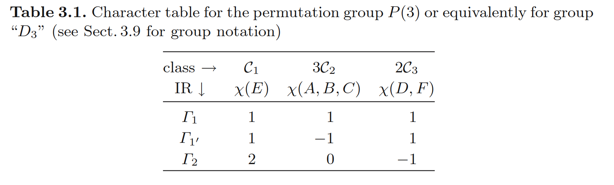

群论3-群表示的特征标
特征标；
特征标的定义
对于一个群，如果\(D^{(\Gamma_j)}(R)\)是它的一个表示，那么\(U^{-1}D^{(\Gamma_j)}(R)U\)也是。为了统一这些等价的群表示，我们定义群表示的特征标，它与矩阵的迹有关，于是在相似变换下保持不变。
定义（特征标）:在一个群表示中，对称操作\(R\)的矩阵表示为\(D^{(\Gamma_j)}(R)\)，定义它的特征标\(\chi^{(\Gamma_j)}(R)\)为\(D^{(\Gamma_j)}(R)\)的迹，即 \[ \chi^{(\Gamma_j)}(R)=tr[D^{(\Gamma_j)}(R)]=\sum_{\mu=0}^{l_j}[D^{(\Gamma_j)}(R)]_{\mu\mu} \] 其中\(l_j\)是群表示\(\Gamma_j\)的维度，\(j\)是标号群表示的指标。
假设一个群的阶数为\(h\)，则该群有\(h\)个特征标，因为每一个群里的元素都对应一个特征标。在相似变换下等价的群表示都有相同的特征标。
特征标和类
定理：在同一类中的元素的特征标相同。
我们用特征值表来详尽的展示一个群表示中的类与特征标分布。

对于不可约群表示，称它的特征标是不可约特征标。
对于特征标的完美正交定理
定理：不可约群表示的不可约特征标满足如下正交关系 \[ \sum_{R}\chi^{(\Gamma_j)}(R)\chi^{(\Gamma_j^{\prime})}(R^{-1})=h\delta_{\Gamma_j, \Gamma_j^{\prime}} \] 或者 \[ \sum_{R}\chi^{(\Gamma_j)}(R)[\chi^{(\Gamma_j^{\prime})}(R)]^{*}=h\delta_{\Gamma_j, \Gamma_j^{\prime}} \]
特征标告诉我们一个群表示是否可约。一般地，可约群表示的特征标并不满足如上正交关系。
特征标告诉我们有没有找全一个群的所有不可约表示。即通过 \[ \sum_jl_j^2=h \]
特征标告诉我们两个不可约群表示是否等价。通过如下定理：
定理：两个不可约群表示等价的充分必要条件是它们有相同的特征标。
可约群表示
定理：对于一个可约群表示，将其约化成不可约群表示的方式唯一。
假设\(\chi(\mathcal{C}_k)\)是一个可约群表示中某一类的特征标，则其可被分解为 \[ \chi(\mathcal{C}_k)=\sum_{\Gamma_i} a_i\chi^{(\Gamma_i)}(\mathcal{C}_k) \] 其中\(a_i\)表示可约群表示中包含\(\Gamma_i\)的次数，它们是唯一的。
证明： \[ a_j=\frac{1}{h}\sum_kN_k[\chi^{(\Gamma_j)}(\mathcal{C}_k)]^{*}\chi(\mathcal{C}_k) \] 其中\(N_k\)是\(\mathcal{C}_k\)类中的元素个数。
评论：
我们可以把每个不可约表示的特征标当成\(h\)维空间里的向量，这些向量相互正交，且每一个向量的模为\(h\)。假设不可约表示的个数为\(k\),由于可约表示是一些不可约表示的直和，它的特征标组成的向量一定是这\(k\)个\(h\)维向量的线性叠加，也就一定属于span{这h个k维向量}中。又因为这\(k\)个\(h\)维向量相互正交，且模为\(h\),于是可约表示特征标组成的向量一定可以被唯一地分解或者投影。
可以用来说明具有高对称性的系统受到微扰后对称性降低，原先简并的能级被分裂，其分裂的方式遵循——在新的低对称性群下，原来对应高对称性群的不可约表示成为对应新的低对称性群的可约表示，并且可以分解为新的低对称群不可约表示的直和。
不可约表示的个数
定理：不可约表示的个数等于群中共轭类的个数。
考虑特征标的正交定理 \[ \sum_{k^{\prime}=1}^{k}N_{k^{\prime}}\chi^{(\Gamma_i)}(C_{k^{\prime}})[\chi^{(\Gamma_j)}(C_{k^{\prime}})]^{*}=h\delta_{\Gamma_i,\Gamma_j} \] 改写为 \[ \sum_{k^{\prime}=1}^{k}\sqrt{\frac{N_{k^{\prime}}}{h}}\chi^{(\Gamma_i)}(C_{k^{\prime}})[\sqrt{\frac{N_{k^{\prime}}}{h}}\chi^{(\Gamma_j)}(C_{k^{\prime}})]^{*}=\delta_{\Gamma_i,\Gamma_j} \] 其中\(\sqrt{\frac{N_{k^{\prime}}}{h}}\chi^{(\Gamma_i)}(C_{k^{\prime}})\)构成了\(k\)维的一组正交归一的向量，其个数为不可约表示的个数，于是不可约表示的个数小于等于\(k\)，通过特征标的第二正交定理，我们可以得到不可约表示的个数大于等于\(k\)，从而不可约表示的个数等于群中共轭类的个数。
评论：
- 这说明特征标表的行数等于列数。
- 推论：对于阿贝尔群，共轭类的个数即为群中所有元素的个数\(h\)，所以共有\(h\)个不可约表示，且这些不可约表示都是一维的。
特征标的第二正交定理
定理: 对所有不可约表示的求和 \[ \sum_{\Gamma_j}N_k\chi^{(\Gamma_j)}(C_k)\chi^{(\Gamma_j)}(C_{k^{\prime}})=h\delta_{k,k^{\prime}} \] 评论：
- 第二正交定理表示的是特征标表列之间的正交关系，而第一正交定理表示的是行之间的正交关系。
- 正交关系中的\(N_k\)只是用来表示向量自己和自己内积的模，对应\(k=k^{\prime}\)的情况。当\(k\neq k^{\prime}\)时右式本来就为0，\(N_{k}\)不起作用。
- 与上一节类似，通过第二正交定理我们可以构造\(k\)个不可约表示个数维正交归一的向量，得到不可约表示的个数大于等于\(k\),
正则表示
通过对群表的行和列进行重排，使得对角线总是单位元。一个\(P(3)\)群的例子如图所示

元素\(X\)的正则表示就是把群表中所有\(X\)的位置换成1，其它位置换成0的矩阵。下面我们来说明这样的构造确实是一个群表示，即说明 \[ D^{reg}(BC)=D^{reg}(B)D^{reg}(C) \] 我们把\(X\)的矩阵元标记为 \[ D^{\mathrm{reg}}(X)_{A_k^{-1}, A_i}= \begin{cases}1 & \text { if } \quad A_k^{-1} A_i=X \\ 0 & \text { otherwise }\end{cases} \] 考虑群中两个元素\(B, C\)表示相乘 \[ D^{\mathrm{reg}}(B C)_{A_k^{-1}, A_i}=\sum_{A_j} D^{\mathrm{reg}}(B)_{A_k^{-1}, A_j} D^{\mathrm{reg}}(C)_{A_j^{-1}, A_i} \] 其中不为0的矩阵元只会出现在同时满足条件的\({A_k^{-1}, A_i}\)上: \[ A_k^{-1}A_j=B, \quad A_j^{-1}A_i=C \] 即\(A_k^{-1}A_i=BC\)，而这正好是\(BC\)的表示: \[ D^{\mathrm{reg}}(B C)_{A_k^{-1}, A_i}= \begin{cases}1 & \text { if } \quad A_k^{-1} A_i=B C \\ 0 & \text { otherwise }\end{cases} \] 通过如下定理，我们可以从一个群的正则表示中找出它所有的不可约表示：
定理：正则表示包含了所有不可约表示，每一个不可约表示出现的次数就是这个不可约表示的维度。
证明： 考虑正则表示展开为不可约表示 \[ \chi^{reg}(C_k)=\sum_{\Gamma_i}a_i\chi^{(\Gamma_i)}(C_k) \] 其中系数 \[ a_i=\frac{1}{h}\sum_{k}N_k[\chi^{(\Gamma_i)}(C_k)]^*\chi^{reg}(C_k) \] 观察到对于正则表示，除了单位元的特征标为\(h\)外，其它的特征标均为0，于是上式变为\(a_i=l_i\)，其中\(l_i\)是\(\Gamma_{i}\)表示的维度。所以每一个不可约表示出现的次数就是这个不可约表示的维度。